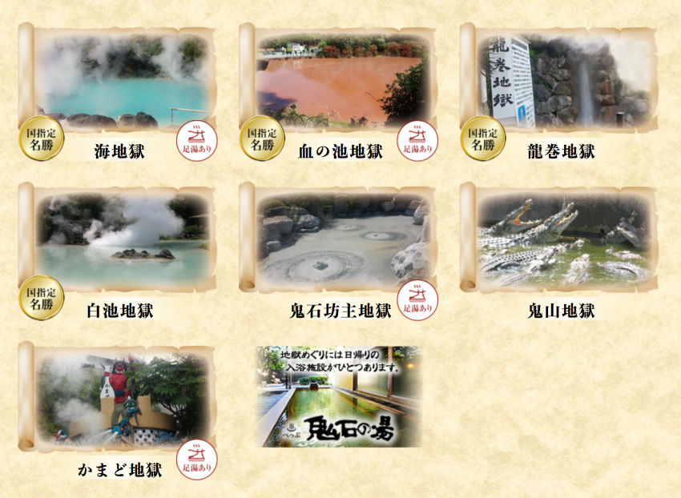
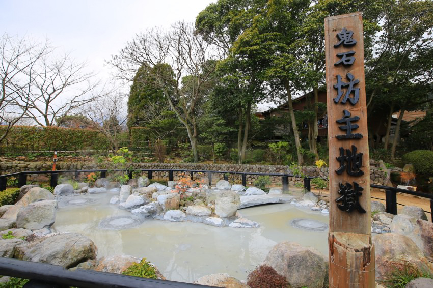
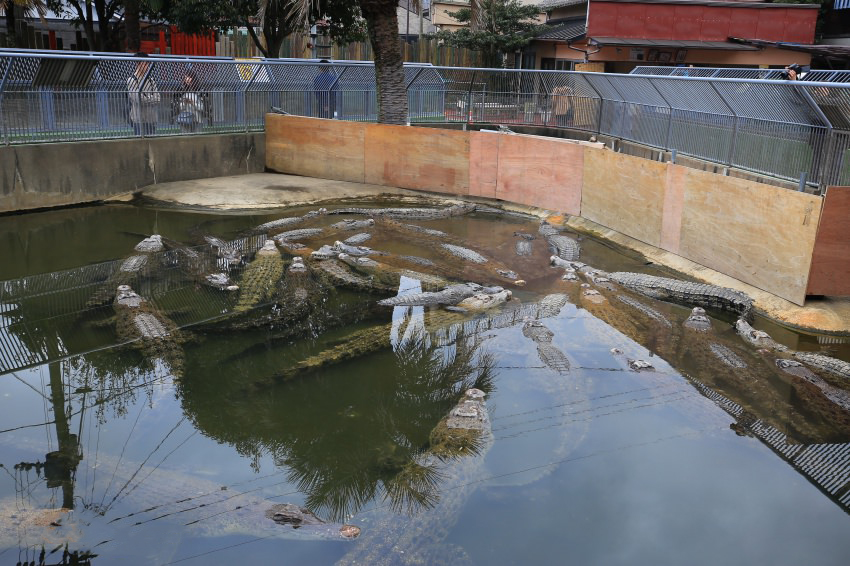

別府地獄溫泉
一千年前也就是在很久以前100度前後的蒸汽、熱泥漿、熱水猛烈的從地面噴出，這樣的地方人們無法接近，地獄的名稱便因此而來。從蔚藍色的海地獄，被染成鮮紅色的血池地獄開始，鬼石坊主、山、灶、鬼山、白池、龍捲共計8個地獄溫泉。作為土特產的溫泉蛋，地獄蒸布丁都很有名。

別府溫泉八大地獄必玩
別府這八個溫泉有泥漿、有熱水、有間歇泉，都是只能用眼睛看，不能泡的，也因此被冠上地獄的名稱。但周圍也都會導入一些足湯，大家可以準備一條毛巾在包包裡，享受一下足湯的樂趣。分別是：1.海地獄（國指定名勝、有足湯）
2.血池地獄（國指定名勝、有足湯）
3.龍卷地獄（國指定名勝）
4.白池地獄（國指定名勝）
5.鬼石坊主地獄（附有足湯）
6.鬼山地獄（鱷魚地獄）
7.灶地獄（附有足湯）
8.山地獄
別府溫泉－海地獄
呈現Tiffeny藍的海地獄溫泉池這是因為溫泉從地表噴出後水質中溶解了硫酸鐵而形成，看眼前滾滾的熱氣就知道溫度很高， 水溫高達攝氏98度，只差沒沸騰而已，很壯觀。
別府溫泉－鬼石坊主地獄
海地獄旁是鬼石坊主地獄，灰色的泥漿不斷沸騰冒泡， 冒出巨大泡泡時像是和尚的光頭，加上地名為鬼石，因此取名「鬼石坊主地獄」。 沸騰的泥漿發出聲響、山水的庭園風格蠻悠閒的。

別府溫泉－灶地獄
灶地獄這是以日本神話故事來命名，區域裡總共有1丁目～6丁目等另個不同的池塘，每種泉水都有不同的特性，唯一相同的就是都好燙，與我們一般熟悉的溫泉溫度都要高上許多。別府溫泉－鬼山地獄（鱷魚地獄）
鬼山地獄有名的就是鱷魚，用地獄溫泉的高溫來飼養鱷魚，也被稱作鱷魚地獄。

地圖